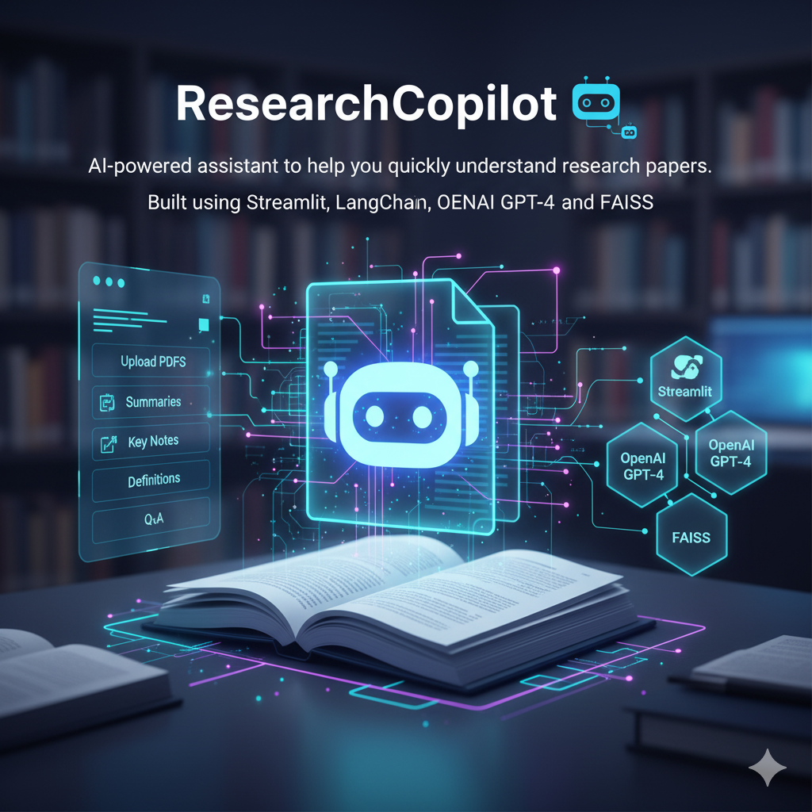

Projects
🌱 Optimizing Investments on Agricultural Land
Project analyzing farmland investment using crop yield, soil characteristics, and market data.
🤖 ResearchCopilot
AI-powered assistant to help you quickly understand research papers.
Peterbilt Cost Optimization through Predictive Analytics
Analyzing years of vehicle data to uncover business drivers of warranty costs.

RNN and LSTM for Time Series Forecasting
End-to-end workflow for RNN and LSTM models in time-series forecasting.

Deep Learning and Neural Networks
Building and improving MLPs and CNNs from scratch.
Frontend Development
A project repository containing responsive web applications.